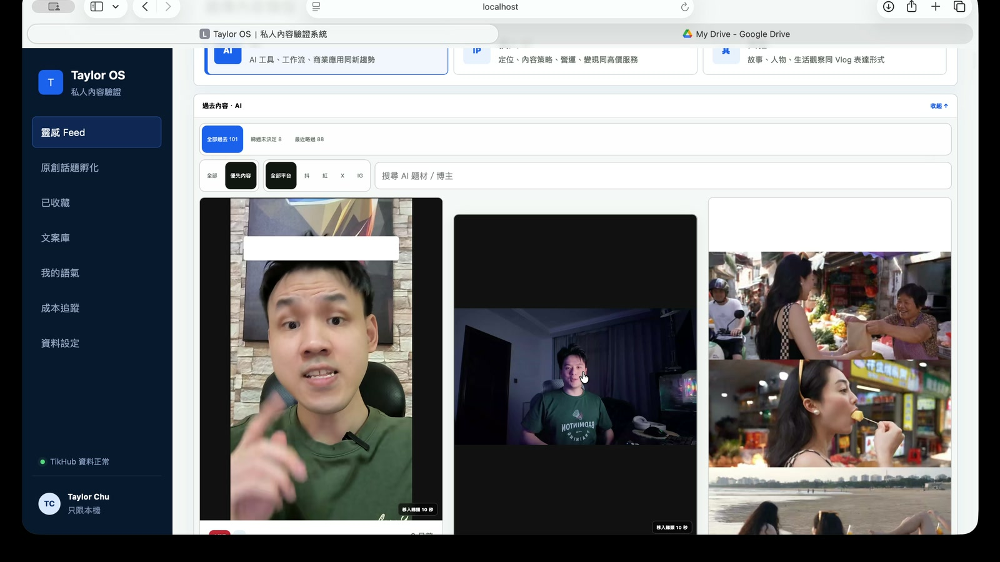
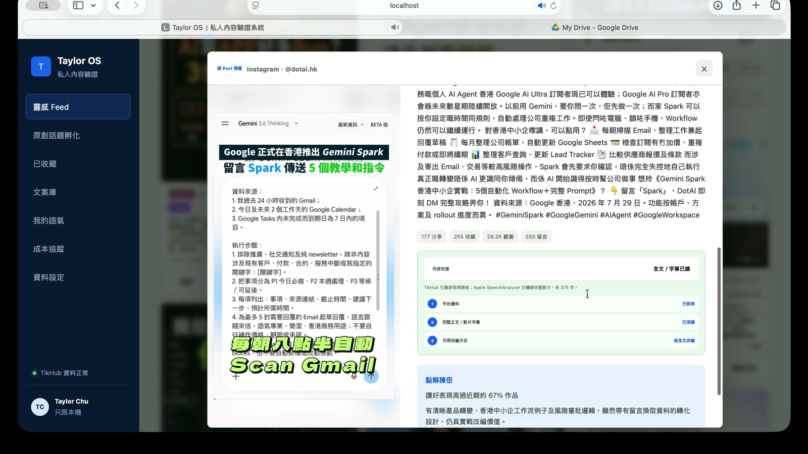
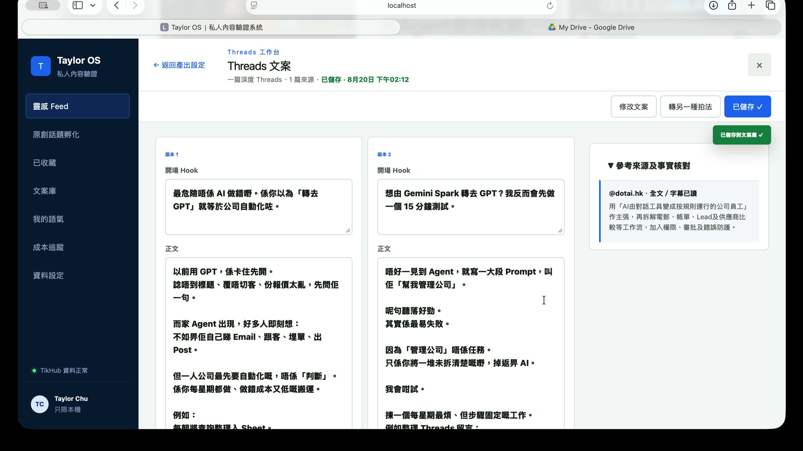

01
先由 Feed 揀值得研究嘅內容
系統將不同來源整理成一個內容 Feed，先幫我由大量資訊入面，揀出今次真正值得花時間研究嘅題材。

Jimmy／DotAI 團隊，你好。
聽完你哋分享 Loop Engineering，我將呢套思路放入自己一直整緊嘅內容工具，做咗呢個版本。對我嚟講，AI 唔係一次過出一個答案，而係將每次使用、反應同結果帶返入系統，令下一輪做得更好。
我平時幫人拍片，亦有多年銷售經驗。見到好多人想經營社交媒體，但唔知出咩、拍咩，所以我整咗呢個 Content Loop，將參考、學習偏好、推薦同內容產出串成一條可以持續改善嘅流程。
影片展示其中一次完整使用：揀內容、深讀、加入自己角度，再變成可修改嘅 Threads 成品。成套系統嘅核心，係將每次使用變成下一輪嘅學習訊號。
系統將不同來源整理成一個內容 Feed，先幫我由大量資訊入面，揀出今次真正值得花時間研究嘅題材。

打開內容後，系統會讀完整來源、字幕同互動資料，再拆出題材、角度同點解值得參考，避免只憑一個標題亂估。

我先輸入自己點睇，再由系統整理成兩個 Threads 版本。成品旁邊保留參考來源，方便核對，唔會將人哋嘅故事當成自己。

Agent 會定時搵市場資料、分析同出題，再將結果放入飛書。客戶唔使理解背後流程，只需要揀題同拍片。
排程 × Google Trends × Trae Work × 飛書
如果你哋想睇實際操作
我理解嘅 Loop Engineering
選擇、收藏、深讀、採用同發布反應，都唔只係一次操作，而係系統可以持續學習嘅訊號。
用得愈多，系統就愈知道咩題材、角度同表達方式真正適合呢個用家。呢個就係成套 Content Loop 設計嘅核心。
點解我想加入 DotAI
坊間好多 AI 教學最後只係教人點撳軟件。但我認同你哋做緊嘅方向：幫人同公司將 AI 變成一套可以重複使用、持續改善嘅工作方式。
我有多年銷售經驗，亦一直落地幫客戶拍片、做內容。我想加入 DotAI，將自己對客戶、內容同執行嘅理解，用喺推動 AI 教育同企業應用上。
呢個 Content Loop 係我畀你哋睇嘅一個實際作品。如果你哋想睇我點樣諗、點樣做，我想約個時間直接示範，再傾下我可以幫 DotAI 做咩。